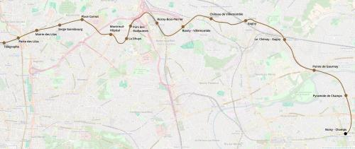

M11 Est - Noisy-Champs
M11 Est - Noisy-Champs
Les Lilas - Noisy-Champs
Une extension de la ligne 11 du métro.
Ce prolongement est la description du projet d'extension de la ligne 11 déjà en cours d'étude par le STIF. dans la partie Rosny-Bois-Perrier - Noisy-Champs nous proposons une modification qui consiste à décaler l'itinéraire vers le nord et l'est près Villemomble pour tenir compte de la création du RER G, du prolongement du métro 1 et permettre une mutualisation des travaux de génie civil entre Gagny et Noisy Champs avec la ligne 16.
Notre version inclus également la création d'une station à Pyramide de Champs-sur-Marne.
Site officiel du prolongement de la ligne 11 et sa section sur la deuxième partie Rosny-sous-Bois - Noisy-Champs.
Voir les autres projets associés à cette ligne
Carte

Cliquer pour agrandir
Si ce projet vous intéresse n'hésitez pas à le (re-)partagez sur les réseaux sociaux ou par courriel ou à en parler autour de vous.
Si vous souhaitez travailler à la concrétisation de ce projet, passez à l'action et contactez nous.
Commenter